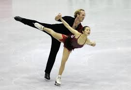
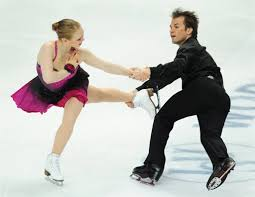
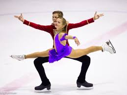

|
Спорт - немов всесвіт. У ньому теж запалюються і загасають зірки | ||
Меню |
Фігурне катанняФігурне катання — зимовий олімпійський вид спорту, в якому спортсмени переміщуються на ковзанах по льоду з виконанням додаткових елементів під музику. В офіційних змаганнях, як правило розігруються чотири комплекти медалей: у жіночому одиночному катанні, у чоловічому одиночному катанні, у парному фігурному катанню, а також у спортивних танцях на льоду. Популярність фігурного катання росла, і вже в 1908 році змагання фігуристів вперше були включені до програми літніх Олімпійських ігор в Лондоні. Першими олімпійськими чемпіонами в одиночному катанні в 1908 сталі М. Сайерс (Велика Британія), У. Сальхов (Швеція), Панін-Коломенкін (Росія) і спортивна пара А. Хюблер — Г. Бюргер (Німеччина). Фігурне катання на ковзанах увійшло і в програму літніх Олімпійських ігор в Антверпені (1920), згодом воно було представлене на всіх Зимових Олімпійських іграх. Видатних успіхів в олімпійських змаганнях здобули Гилліс Графстрем (Швеція), що завоював 3 золоті і 1 срібну медаль, триразові олімпійські чемпіонки — Соня Хені (Норвегія) і Ірина Родніна (СРСР). На Білій Олімпіаді в Санкт-Моріці (1948) американський фігурист Дикий Баттон провів переворот. Саме з нього у фігурному катанні «прописалися» стрибки в декілька оборотів і інші акробатичні елементи. Баттон майже літав над ковзанкою. Нагородою йому стала золота олімпійська медаль в одиночному катанні. Олімпійська першість розігрувалася в одиночному (чоловічому і жіночому) і парному катанні. У 1976 в олімпійську програму були включені спортивні танці на льоду. |
Видатні українські фігуристиОксана Баюл стала першою олімпійською чемпіонкою незалежної України на Зимовій Олімпіаді 1994 року. Олімпійським чемпіоном серед чоловіків ставав Віктор Петренко в 1992 році, хоча на той час Україну ще не було допущеною до олімпійських ігор. Українська танцювальна пара у складі Олени Грушиної та Руслана Гончарова стали бронзовими призерами на ХХ Олімпійських іграх 2006 в Турині. Чемпіонами та призерами європейської першості у одиночному катанні також ставали Дмитро Дмитренко (1993 — золото, 2003 — бронза), В'ячеслав Загороднюк (1996 — золото, 1994 — срібло, 1995, 1997 — бронза) та Олена Ляшенко (1995, 2005 — бронза, 2004 — срібло), Юлія Лавренчук (бронза-1997). Також інші відомі українські фігуристи — Юлія Обертас, Олена Савченко, Галина Маняченко та пара Станіслав Морозов / Тетяна Волосожар, Аліса Агафонова, які неодноразово займали чільні місця на стартах під егідою Міжнародної федераціЇ фігурного катання. |
|
|
  
|
|||
|
Обирайте найкраще для себе! | ||